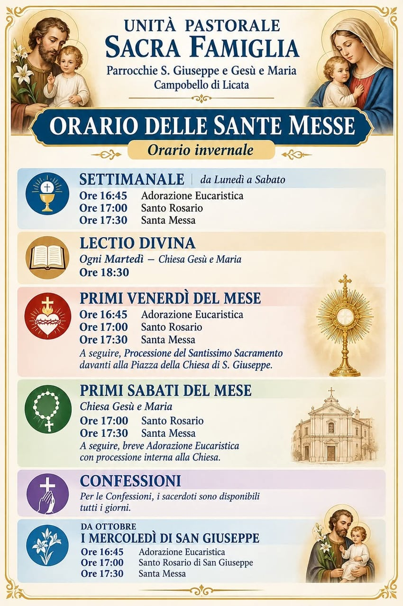

Gli orari delle celebrazioni nelle due chiese e le informazioni per ricevere i sacramenti.
The times of the celebrations in the two churches and how to receive the sacraments.
La preghiera scandisce la settimana nelle chiese di Gesù e Maria e San Giuseppe.
Prayer marks the week in the churches of Gesù e Maria and San Giuseppe.

Segni efficaci della grazia, istituiti da Cristo e affidati alla Chiesa, che accompagnano ogni tappa della vita cristiana.
Effective signs of grace, instituted by Christ and entrusted to the Church, accompanying every stage of Christian life.
Porta d'ingresso alla vita cristiana: libera dal peccato originale e fa rinascere come figli di Dio. Per il Battesimo dei bambini si concorda un incontro di preparazione con i genitori.
The gateway to Christian life: it frees from original sin and gives new birth as children of God. For infant Baptism a preparation meeting is arranged with the parents.
Il sacramento del perdono, nel quale si fa esperienza della misericordia di Dio. I sacerdoti sono disponibili prima delle celebrazioni e su richiesta.
The sacrament of forgiveness, in which we experience the mercy of God. Priests are available before celebrations and on request.
Fonte e culmine della vita cristiana: il pane e il vino divengono Corpo e Sangue di Cristo. I bambini vi si preparano attraverso il cammino di catechesi.
Source and summit of Christian life: bread and wine become the Body and Blood of Christ. Children prepare through the catechesis journey.
Il dono dello Spirito Santo che rafforza la fede e rende testimoni di Cristo. Si riceve al termine di un apposito percorso di preparazione.
The gift of the Holy Spirit that strengthens faith and makes us witnesses of Christ. It is received at the end of a dedicated preparation path.
Aperte le iscrizioni al corso per gli adulti · dal 16 ottobre ore 19:00Adult course enrolment open · from 16 October, 7 pmL'alleanza d'amore tra un uomo e una donna, benedetta da Dio e resa segno del suo amore. È previsto un corso di preparazione da concordare con i sacerdoti.
The covenant of love between a man and a woman, blessed by God and made a sign of his love. A preparation course is arranged with the priests.
Il matrimonio celebrato con rito religioso cattolico produce anche effetti civili. Prende il nome di Matrimonio Concordatario poiché si basa sul Concordato tra la Santa Sede e lo Stato Italiano.
I documenti necessari per la celebrazione del matrimonio con rito religioso comprendono tutti quelli previsti per il matrimonio civile, e inoltre:
La Chiesa Cattolica richiede ai futuri sposi la partecipazione ad un apposito corso preparatorio al matrimonio, da seguire presso una delle Parrocchie di provenienza oppure in una terza a scelta; la durata di tale corso di solito non supera i due mesi;
Tale documento viene rilasciato dalla Chiesa in cui è stato ricevuto il sacramento. Nel caso in cui sia impossibile procurarsi un certificato di battesimo recente o anche vecchio, sarà sufficiente andare dal Parroco insieme ad un'altra persona (cristiana) che confermi il ricevimento del sacramento;
Deve essere richiesto al parroco della parrocchia in cui è avvenuto il battesimo. Di solito, la Cresima è annotata nel certificato di battesimo. Se così non fosse, il certificato va richiesto alla parrocchia in cui si è svolta la cerimonia;
È necessaria quando uno degli sposi, dopo aver compiuto il sedicesimo anno di età, è stato residente in diocesi diverse da quella attuale. La Prova di Stato Libero avviene alla presenza di due testimoni: il Parroco istruisce un «processicolo» e raccoglie la testimonianza di due persone che hanno conosciuto lo sposo (o la sposa) nel periodo in cui ha avuto la residenza in un'altra diocesi. Se non vi sono testimoni, la prova avviene tramite giuramento dell'interessato.
Prodotti tali certificati, il parroco consegna ai futuri sposi la richiesta di pubblicazioni civili da portare in Comune. Quindi si procede con la prassi civile, al termine della quale l'Ufficiale di Stato Civile rilascerà il certificato di avvenute pubblicazioni civili. Tale documento, insieme ai certificati religiosi, verrà poi portato al Parroco che interrogherà separatamente i futuri sposi, durante il cosiddetto «consenso».
Accertata l'assenza di irregolarità, il Parroco provvede alle «Pubblicazioni Religiose». Le pubblicazioni, che indicano le generalità degli sposi e il luogo in cui intendono celebrare il matrimonio, vanno esposte in parrocchia o in entrambe se gli sposi non appartengono alla stessa.
Qualora la coppia abbia deciso di sposarsi presso una Diocesi differente dalla propria, il Parroco di quest'ultima rilascia un modulo denominato «stato dei documenti» che, vidimato dalla Curia, andrà consegnato alla Parrocchia prescelta per poter procedere al matrimonio.
Subito dopo la celebrazione, il Parroco compila l'atto di matrimonio in duplice originale ed entro i successivi 5 giorni ne trasmette una copia all'ufficiale di stato civile del comune in cui è avvenuto il matrimonio stesso. L'ufficiale trascrive l'atto il giorno seguente e comunica l'avvenuto adempimento al parroco.
Il matrimonio concordatario produce gli stessi effetti del matrimonio civile: non dal momento della trascrizione, ma da quello della celebrazione anche se l'ufficiale dello stato civile, per qualsiasi ragione, abbia effettuato la trascrizione oltre il termine prescritto. Quest'efficacia retroattiva della trascrizione non è irrilevante: basti pensare al caso del coniuge che muore subito dopo la celebrazione, e che trasmette così al coniuge superstite parte della propria eredità: il coniuge superstite ha la qualità di legittimario.
A marriage celebrated with the Catholic religious rite also has civil effects. It is called a Concordat Marriage because it is based on the Concordat between the Holy See and the Italian State.
The documents required for a marriage with the religious rite include all those required for a civil marriage, and in addition:
The Catholic Church asks engaged couples to attend a specific marriage preparation course, held in one of their home parishes or in a third parish of their choice; the course usually lasts no longer than two months;
This document is issued by the church where the sacrament was received. If it is impossible to obtain a recent or even an old baptism certificate, it is enough to go to the parish priest together with another (Christian) person who confirms that the sacrament was received;
It must be requested from the parish priest of the parish where the baptism took place. Confirmation is usually recorded on the baptism certificate. If not, the certificate must be requested from the parish where the ceremony took place;
It is required when one of the spouses, after turning sixteen, has lived in dioceses other than the current one. The proof of free status takes place in the presence of two witnesses: the parish priest conducts a short inquiry (the «processicolo») and gathers the testimony of two people who knew the bride or groom while they lived in another diocese. If there are no witnesses, the proof is given by the person's own oath.
Once these certificates have been produced, the parish priest gives the couple the request for civil banns to take to the Municipality. The civil procedure then follows, at the end of which the Civil Registrar issues the certificate confirming that the civil banns have been published. This document, together with the religious certificates, is then brought to the parish priest, who interviews the bride and groom separately during the so-called «consent».
Once it is established that there are no irregularities, the parish priest publishes the «Religious Banns». The banns, which state the personal details of the couple and the place where they intend to marry, are displayed in the parish, or in both parishes if the spouses do not belong to the same one.
If the couple has decided to marry in a diocese other than their own, the parish priest of their own parish issues a form called «status of documents» which, once endorsed by the Curia, must be delivered to the chosen parish so that the marriage can take place.
Immediately after the celebration, the parish priest draws up the marriage record in two originals and, within the following 5 days, sends a copy to the Civil Registrar of the municipality where the marriage took place. The registrar transcribes the record the following day and informs the parish priest that this has been done.
A Concordat marriage has the same effects as a civil marriage: not from the moment of transcription, but from the moment of the celebration, even if the Civil Registrar, for whatever reason, carried out the transcription after the prescribed deadline. This retroactive effect of the transcription is far from irrelevant: consider the case of a spouse who dies immediately after the celebration and thus passes part of their estate to the surviving spouse, who is entitled to a reserved share of the inheritance.
Il sacramento che consacra al ministero di diaconi, sacerdoti e vescovi, al servizio del popolo di Dio.
The sacrament that consecrates to the ministry of deacons, priests and bishops, in service to the people of God.
Il conforto della grazia di Dio nella malattia e nella fragilità. Per gli ammalati a casa è possibile richiedere la visita del sacerdote.
The comfort of God's grace in illness and frailty. For the sick at home, a visit from the priest can be requested.
Per informazioni e per avviare la preparazione, scrivi alla parrocchia o parla con i sacerdoti al termine delle celebrazioni.
For information and to begin preparation, write to the parish or speak with the priests after the celebrations.
sacrafamiglia.campobello@diocesiag.it